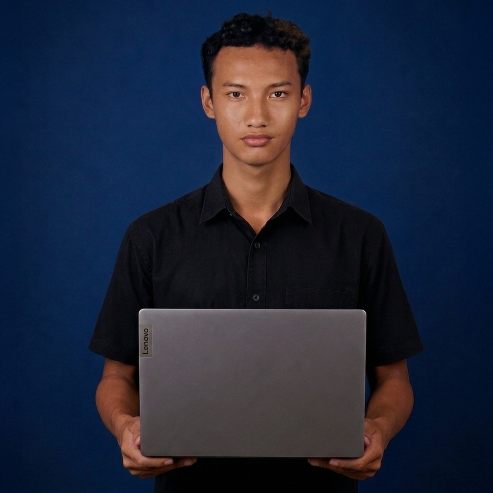
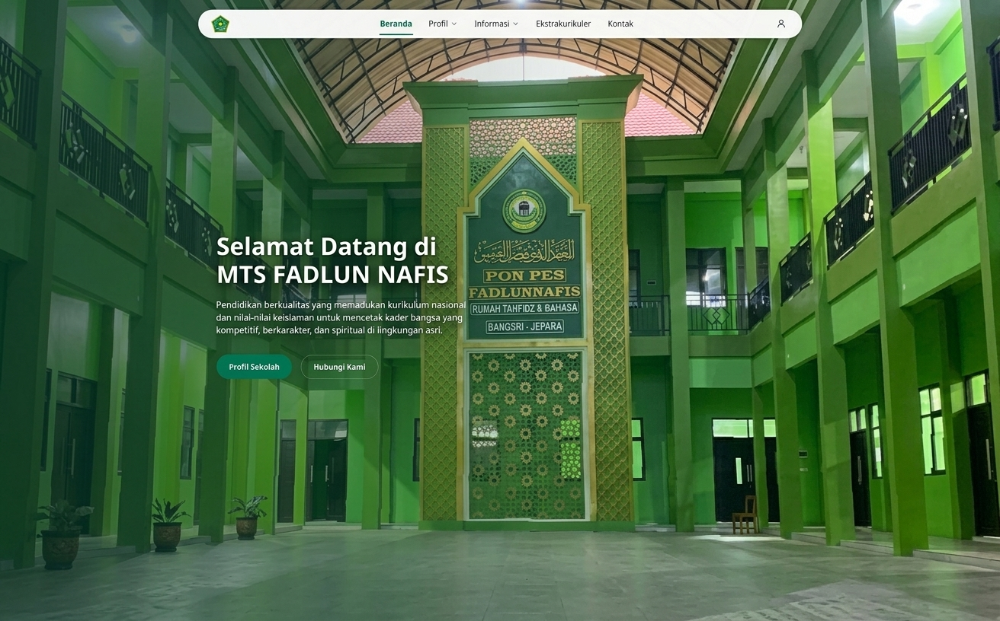
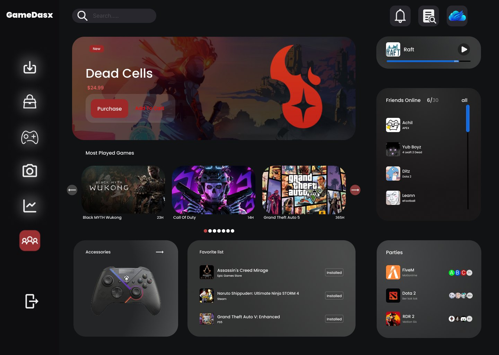
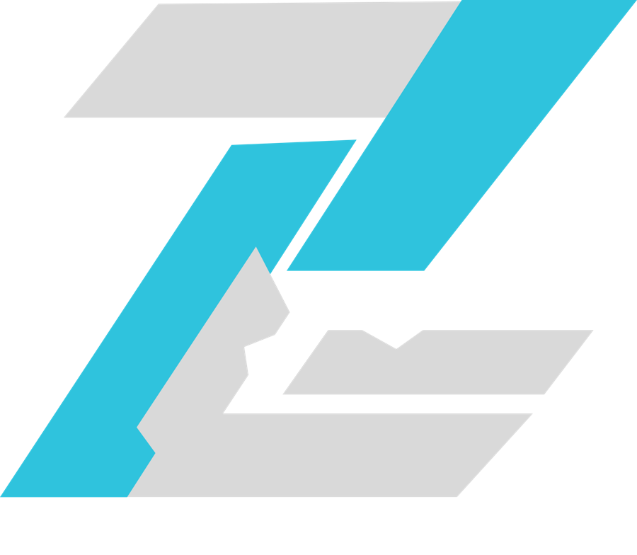

Web Development
 PHP
PHP Laravel
Laravel HTML
HTML CSS
CSS MySQL
MySQL WordPress (dasar)
WordPress (dasar)

MUHAMMAD SIRO JAMMUNIRO
Siswa PPLG yang tertarik pada web development. Memahami dasar WordPress, serta PHP, Laravel, dan MySQL, dan sedang mencari tempat PKL untuk belajar langsung di lingkungan kerja.
Ilustrasi dekoratif: relasi antar tabel, hal yang saya pelajari lewat ERD.
Saya Muhammad Siro Jammuniro, biasa dipanggil Siro, siswa kelas XI PPLG 1 di SMKN 1 Bangsri. Saya tertarik pada web development karena senang memecah masalah menjadi bagian kecil yang bisa diselesaikan satu per satu.
Saya memahami dasar WordPress serta pemrograman web dengan PHP, Laravel, dan MySQL. Dalam proyek tim, saya terlibat di tahap perancangan: menyusun flowchart alur sistem dan ERD untuk struktur basis data. Lewat PKL, saya ingin mempraktikkan dasar tersebut di lingkungan kerja nyata dan belajar dari praktisi.
Tingkat dasar sampai menengah, dipakai di proyek sekolah. Tanpa skor persentase, supaya jujur.

Team Project · 3 Members
Website profil dan sistem informasi sekolah, dikerjakan oleh tim tiga orang. Saya bertanggung jawab pada perancangan alur logika sistem dan struktur basis data.
Dokumentasi proyek akan ditambahkan.

UI Design
Desain antarmuka dashboard untuk platform game bernama GameDasx, dengan tema gelap. Tampilan memuat sidebar ikon, kolom pencarian, banner game unggulan, daftar game yang paling sering dimainkan, aksesori, daftar favorit, teman yang sedang online, dan party.
Dokumentasi proyek akan ditambahkan.

Logo Design
Desain logo berbentuk geometris dari bidang-bidang miring bersudut tajam dalam dua warna, biru cyan dan abu-abu muda. Bentuk diagonalnya memberi kesan bergerak dan teknologis.
Dokumentasi proyek akan ditambahkan.
Belum ada pengalaman kerja formal, jadi ini peta hal yang sudah dan sedang saya pelajari.
HTML, CSS, PHP, dan Laravel untuk membangun halaman dinamis.
Menggambar flowchart agar logika disepakati tim sebelum ditulis menjadi kode.
Menyusun ERD dan skema MySQL untuk data sekolah.
Git, GitHub, Vite, Laragon, VS Code, dan Figma.
WordPress, Linux dasar dan CLI, serta JavaScript.
Terbuka untuk PKL di bidang web development. Kirim pesan lewat salah satu jalur ini.